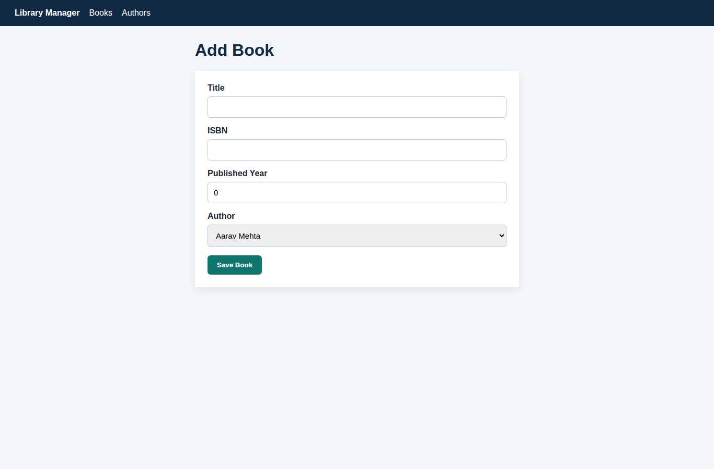
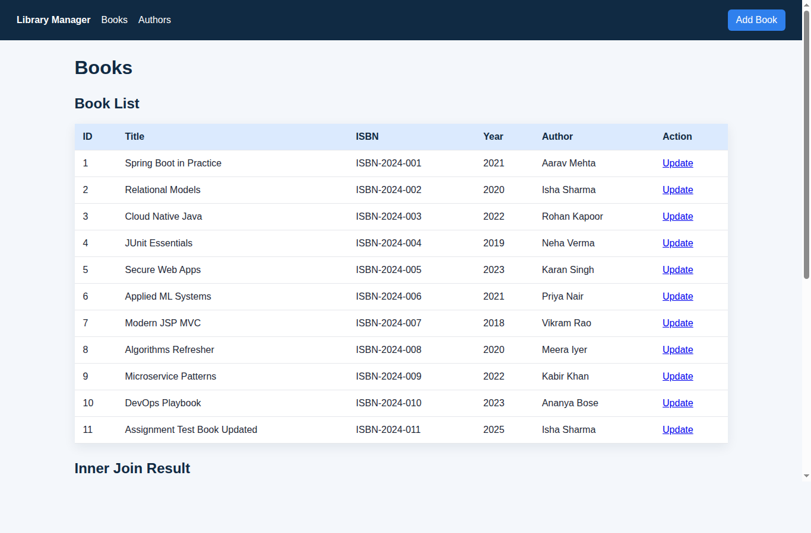
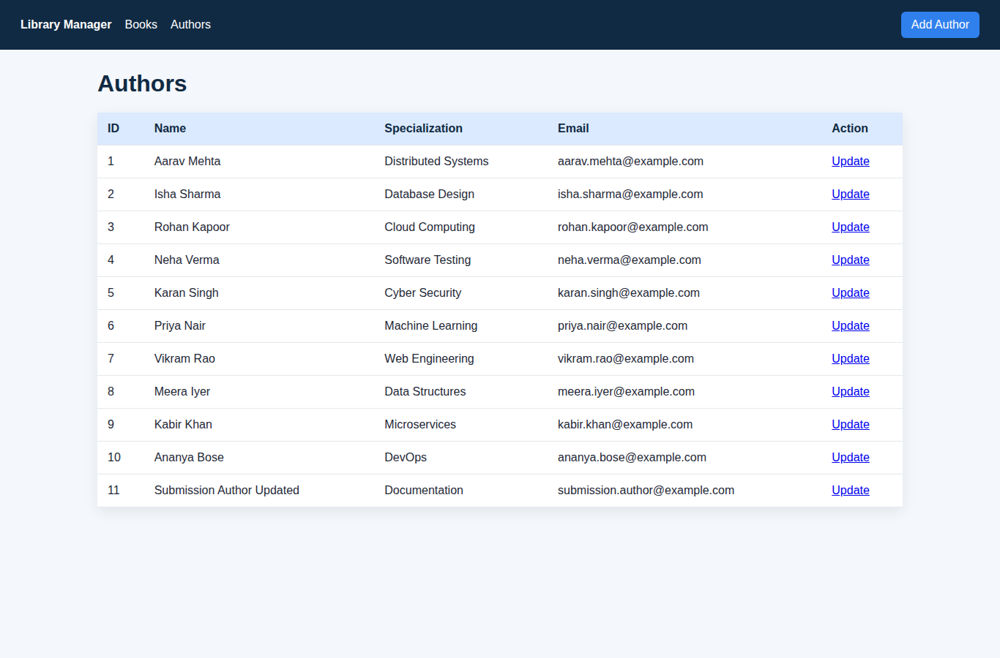

I implemented a library management application using two related entities: Author and Book.
The application follows a standard layered Spring Boot structure: entity classes for persistence, repository
interfaces for database access, service classes for business logic, controllers for Spring MVC request handling,
and JSP pages for the view layer.
| Entity | Main Attributes | Relationship |
|---|---|---|
| Author | id, name, specialization, email | One author can have many books |
| Book | id, title, isbn, publishedYear, author | Each book belongs to one author |
@Entity
public class Author {
@Id
@GeneratedValue(strategy = GenerationType.IDENTITY)
private Long id;
@OneToMany(mappedBy = "author", cascade = CascadeType.ALL, orphanRemoval = true)
private List<Book> books = new ArrayList<>();
}
@Entity
public class Book {
@ManyToOne(fetch = FetchType.LAZY)
@JoinColumn(name = "author_id", nullable = false)
private Author author;
}
A CommandLineRunner named DataSeeder creates 10 authors and 10 books when the application starts.
H2 is used as the database and Hibernate creates the tables automatically through JPA annotations.
JSP forms are available at /authors/new and /books/new. The controller accepts form submissions,
binds request parameters to entity objects, attaches the selected author to a book, and saves through the service layer.
Integrity violations such as duplicate email or duplicate ISBN are caught and shown as form errors.
@PostMapping("/books")
public String createBook(@Valid @ModelAttribute Book book,
BindingResult bindingResult,
@RequestParam Long authorId,
Model model,
RedirectAttributes redirectAttributes) {
bookService.save(book, authorId);
redirectAttributes.addFlashAttribute("success", "Book added successfully.");
return "redirect:/books";
}
The /books and /authors pages list all rows. The book listing also displays the custom inner
join result from the repository layer.
@Query("""
select b.id as bookId, b.title as title, b.isbn as isbn,
b.publishedYear as publishedYear, a.name as authorName,
a.specialization as specialization
from Book b inner join b.author a order by b.id
""")
List<BookAuthorView> findBookAuthorDetails();

Update links are provided in the list views. The edit pages load existing records, allow changes, and submit back to controller methods that update the existing database row through the service layer.
@Transactional
public Book update(Long id, Book bookDetails, Long authorId) {
Book book = findById(id);
book.setTitle(bookDetails.getTitle());
book.setIsbn(bookDetails.getIsbn());
book.setPublishedYear(bookDetails.getPublishedYear());
book.setAuthor(authorService.findById(authorId));
return bookRepository.save(book);
}Repository tests verify that the seed data creates 10 rows in each table and that the custom inner join query returns joined book-author details. Service tests use Mockito to verify create and update logic. I also tested the running web app using HTTP requests for list, create, and update operations.
mvn test: 4 tests passed, 0 failures.mvn clean package: 4 tests passed and executable WAR created./books returned 200, create persisted a new book, update changed it, and the list showed the updated row.
The main issue was JSP packaging. JSPs are most reliable in a Spring Boot executable WAR with files under
src/main/webapp/WEB-INF/jsp, so I changed the project packaging from JAR to WAR. Another issue was form
validation: the selected author comes from authorId, so validation should not require the nested
Book.author object before the controller attaches it.
The project satisfies the requirements for two JPA entities, sample data population, create/read/update operations, custom inner join query, JSP views with CSS, exception handling, service/repository layering, and unit testing.